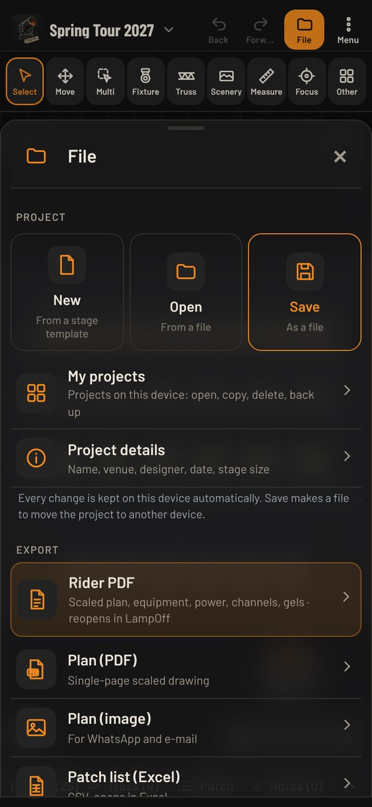
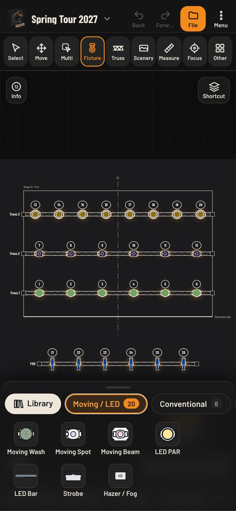
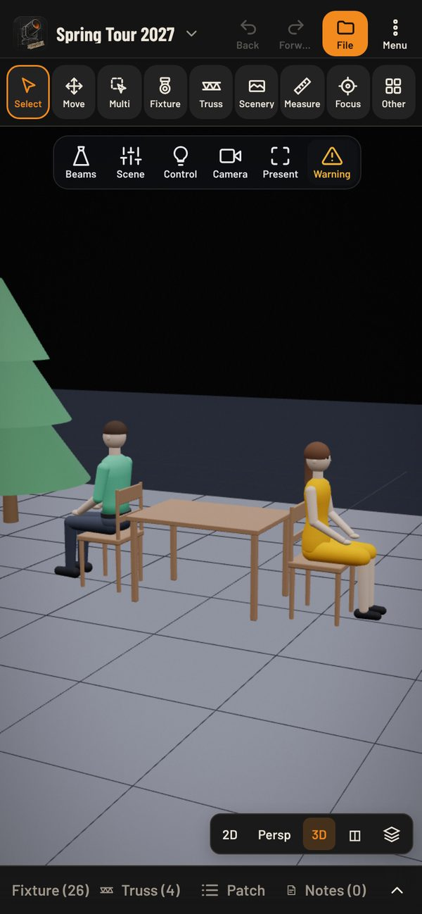
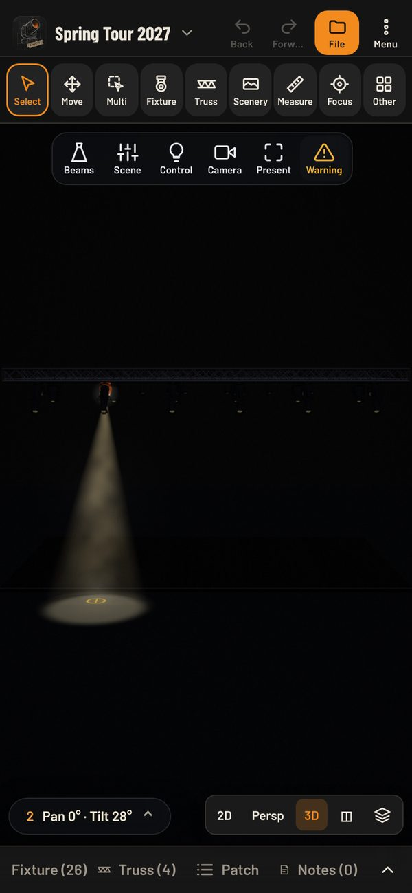
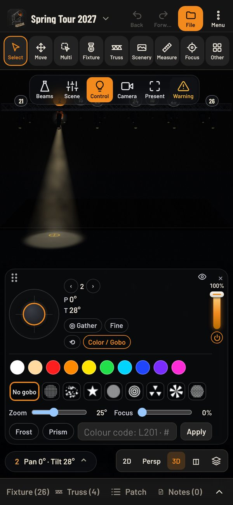

User guide
1 · Getting started: your first plot in 5 steps

- Start a new project. Orange File at the top right › New. Pick a stage template (proscenium, black box, arena, concert…), enter width and depth, Open as a new project.
- Fill in the project details. File › Project details: show name, venue, lighting designer, date.
- Set up the trusses. A template comes with trusses. To draw your own, tap Truss in the toolbar and drag from start to end on the plot.
- Place the fixtures. Tap Fixture, pick a type (e.g. Moving Wash), tap a truss. Each tap places one fixture; the console channel is assigned automatically. Go back to Select when done.
- Address and export. Give DMX addresses in the Patch tab of the bottom panel. Then File › Rider PDF: scaled plot, equipment, power, patch and gel lists in one file.
2 · The screen: bars, plot and bottom panel
On a phone the screen has four parts:
- Top bar. Logo and project name on the left (tap it for the Project panel), Back and Forward (undo / redo) in the middle, orange File and ⋮ Menu on the right (Screen layout, Edit toolbar, Settings, Help).
- Toolbar. Select, Move, Multi, Fixture, Truss, Scenery, Measure, Focus, Other. The active tool has an orange outline. Other opens a grid from the bottom: Pan, Lock, Text, Beams, Layer. When you pan or zoom the plot, the toolbar folds into a thin strip and the plot grows; tap the strip (▾ Tools) to open it again.
- Plot. Info at the top left (hides / shows the text next to fixtures), Shortcut at the top right (shortcuts and groups), the view cube at the bottom right with the 2D / Persp / 3D / ◫ / Layers buttons under it, and the hand (pan) button at the bottom left.
- Bottom panel. Fixture, Truss, Patch and Notes tabs. Tap a tab to open its list, tap again to close. Every list has a search box at the top.
When something is selected, the selection bar appears below the plot (section 10). Notifications show briefly at the top; undoable actions come with an Undo button.
Zoomed out, the plot shows channel numbers only; zoomed in, addresses, gels and gobos appear too.
3 · Navigating, Select, Move and Multi
Moving around the plot (phone and tablet)- One finger on empty space: pans the plot.
- Two fingers: pan and zoom.
- With the hand button (bottom left) on, the plot pans even if you start on a fixture.
- Select. What you tap is selected. Dragging moves nothing; the plot pans instead. Tap empty space to clear the selection. The one exception is the orange focus point of a selected fixture: you can drag that in Select too (section 8).
- Move. The fixture, truss, scenery, object or text you drag is moved. Size, angle and dimension-end handles also work only while Move is on. Go back to Select when done.
- Multi. While it is on, everything you tap is added to the selection (tap again to remove) and dragging with one finger on empty space selects everything in the area. Together with Move, the whole selection moves at once.
Press and hold: opens the menu of what you are touching (section 10).
Computer- Wheel: zoom. Right or middle button drag: pan. Drag on empty space: box select.
- Shift / Ctrl + click: add to or remove from the selection. Double-click: properties. Right-click: menu. In the desktop layout dragging moves directly.
4 · The File menu, projects and venues

The orange File button gathers everything to do with files:
- New: pick a stage template and open a new project. Templates: proscenium, studio / black box, thrust, arena, traverse, concert, empty. Enter the sizes; trusses, legs and backdrop are set up in proportion. Apply to this project changes the stage of the open project instead.
- Open: opens a project file on the phone (.loff or the older .json), or a PDF made by LampOff, as a new project.
- Save: turns the project into a .loff file. You are asked for a name; an existing file with the same name is not overwritten, (1), (2) is added.
- My projects: all projects on the phone. Open, copy, delete, new project; below them Back up all projects and Restore from backup.
- Project details: show name, venue, lighting designer, date, revision, stage width and depth.
Tapping the project name at the top opens the same Project panel: Info, My projects, Venues, Lists.
VenuesBuild a touring venue once and Save as venue (stage, trusses, scenery; the house rig too if you like). Tapping that venue later opens a new project with the room ready. A venue can also be shared as a file.
The LampOff folder on the phoneThe app creates Files › Documents › LampOff on the phone. Projeler holds an up-to-date copy of every project (.loff), Dosyalar holds everything you export. Back this folder up before changing phones or deleting the app; on the new phone open the files with File › Open.
5 · Trusses and towers
- Draw a truss. Truss in the toolbar › drag from start to end on the plot. Dragging sideways makes a truss, dragging up-down makes a tower. Tap Done when finished.
- Truss library. With the Truss tool on, the list at the bottom offers: Truss / pipe, Tower / side pipe, Upright tower, Boom (floor stand), Circle truss, Ground support, Truss array (count and spacing in one go), Lock trusses.
- Settings. Tap a truss › Properties in the selection bar: name, length, direction, distance from the downstage edge, angle, trim height, type (Truss or Pipe), profile and width.
- Angle. With the slider in the settings or by typing a number (e.g. 12.5°). With Move on you can also drag the handle at the end of the selected truss. The fixtures on it turn with the truss.
- Moving. Drag with the Move tool; the fixtures on it go along.
- Circle truss. Give diameter, segment count and height; it can also stand upright or tilted.
Press and hold a truss: Add fixture › (add to this truss, fill the truss with N fixtures, paste) · Fixtures on it › (distribute evenly, select, select one type) · Truss › (copy with fixtures, split here) · Lock · Delete.
6 · Upright towers and heights
The plot is a top view: x is left-right, y is depth. Height (z) is seen and changed in the front and side views (tap the FRONT or SIDE face of the view cube).
- With Move on, drag a truss up or down: its trim height changes. Drag sideways: x in the front view, depth in the side view.
- Dragging a fixture that is not on a truss (on the floor, a stand or an upright tower) up or down changes its height.
- To type a number: Trim height in the truss properties, Height (m) in the fixture properties.
- Truss › Upright tower. The tower is added beside the stage; take it to its place with Move.
- Type its Height in the properties, then Hang fixtures on tower…: count, lowest height, spacing and fixture.
- In the front view drag the fixtures up or down to their exact place.
On the plot the fixtures of one tower would fall on top of each other, so they are listed in a box beside the tower, in height order.
7 · Adding fixtures and the library

- Tap Fixture. The palette opens at the bottom: groups (Moving / LED, Conventional, Other, Custom symbols) and the types in that group.
- Tap a type, then tap a truss or empty space on the plot. Keep tapping to place more. Tap Select when done.
- A fixture dropped near a truss seats on it. If the truss is full a “tight” warning shows; press and hold the truss › Fixtures on it › Distribute evenly.
- The symbol in the palette is the symbol that will be drawn on the plot.
The Library button in the palette: thousands of real models, offline. Search by brand or model, tap Place, tap the plot. A model comes with its modes, channel count, power, weight and true size. For a model that is not listed use Add your own fixture; GDTF, Open Fixture Library (.json) and QLC+ (.qxf) files can be loaded too.
Shortcuts- Fill a truss: press and hold the truss › Add fixture › Fill truss… › count and fixture. They are spaced evenly.
- Shortcuts: add the fixtures and trusses you use most to the Shortcut button at the top right (“Add to shortcuts” in the properties). Tap the shortcut, then tap the plot.
- Adding in the front / side view: pick a fixture from the palette, tap a tower or a truss; it hangs at the height you tap.
8 · Fixture properties and the focus point
Tap a fixture › Properties in the selection bar (or press and hold › Properties). With several fixtures selected the change applies to all of them.
- Model and mode: assign a model from the library and choose its mode; the channel count and channel map follow.
- Identity and channel: symbol type, console channel (this is the fixture’s number), power (W), weight (kg), accessory.
- DMX: universe and address. For conventionals, the dimmer’s DMX address (1 channel).
- Gel (Lee / Rosco code, e.g. L201), gobo, symbol color, purpose, note.
- Height (m): for fixtures that are not on a truss.
- Photometrics: throw distance, beam diameter at the focus point and approximate lux.
After typing a value tap Done at the bottom.
The orange focus pointSelecting a fixture shows its beam with an orange point at the end. Drag the point: the fixture turns to it. Its position does not change, only where it aims. To aim many fixtures at one place: select them › Focus in the selection bar › tap the plot once.
9 · Console channels and DMX addresses
- Console channels come by themselves. Every fixture you add, duplicate or paste gets the next unused channel; no channel is given to two fixtures. The number shown on the plot is this channel.
- Channels in order. Select the fixtures › press and hold › Quick settings › Assign console channels… › start (e.g. 101). Left to right they become 101, 102, 103…
- Addresses in order. Same menu, Assign DMX address…: universe and start address; addresses advance by each fixture’s channel count.
- Auto patch and the DMX map: in the Patch list (section 17).
10 · The selection bar and the press-and-hold menu

Appears below the plot when something is selected:
- One fixture: Properties, Truss (selects the truss it hangs on), Duplicate, Focus, Delete, More (copy, rotate, lock, add to shortcuts…).
- Several fixtures: how many are selected, Edit, Duplicate, Focus, Delete, More.
- Fixture: Properties · Edit › (copy, duplicate, paste, rotate 90°, mirror, align and distribute, hide) · Model and type › · Quick settings › (channel, DMX, gel, gobo, note) · Select › (same type, same model, on this truss) · Group › · Lock · Delete.
- Truss: Settings · Add fixture › · Fixtures on it › · Truss › · Lock · Delete.
- Empty space: Add › (fixture, truss, tower, text, scenery, paste) · Tools › · View › · Layers › · Selection ›.
Mirror copies the selection to the other side of the center line. Made a mistake? Back at the top.
11 · Locking
In Select nothing moves anyway. Locking is for things that must stay put even while Move is on.
- Other › Lock: “Lock mode” shows at the top. Every fixture, truss, scenery piece, text and dimension you tap is locked. Switch to Unlock from the strip at the top. Tap the button again to leave.
- A locked fixture cannot be moved but can still be selected, edited and focused. It shows a small lock on the plot.
- Lock trusses in the Truss tool fixes all trusses at once.
- To unlock everything: press and hold empty space › Selection › Unlock all.
12 · Scenery, performers and objects

Scenery in the toolbar. Pick from the list at the bottom, then tap or drag on the plot:
- Stage template and Stage size.
- Scenery / platform: drag corner to corner. Circle: center to edge. Line: curtain, wall.
- Leg set and Backdrop: evenly spaced legs left and right.
- Male performer, Female performer: placed where you tap. Type a name, choose a color, turn the way they face.
- Seated performer: place the chair first, then move the seated performer onto it and turn them the same way. Seat height in the properties: chair 0.48 · armchair 0.46 · bar stool 0.81 m. A standing performer can also be switched to Pose: Seated in the properties.
- Object library: Stage (door, rostrum, steps, bench, fence, barrel…), Nature (tree, pine, palm, bush, flowers, rock), Music (drum kit, piano, amp, monitor, PA…), Event (gala table, lectern, crowd barrier, roll-up, row of chairs…), Technical (LED screen, projection screen, camera, flight case…), Furniture (table, chair, armchair, sofa…).
Objects appear at their true heights in the front, side, perspective and 3D views. Each piece can have a label, a color and a height.
Your own object: draw the parts with rectangles, circles and lines; give each a height and, if needed, a “from floor” value; select them all › Save to object library.
13 · Dimensions and text
- Measure: tap two points or two fixtures (or drag from one to the other); the distance is written. A dimension tied to a fixture updates when the fixture moves.
- Chain: draw a cable run point by point; total length and cable allowance (%) are calculated.
- Manual value: if you drew something out of scale, select the dimension › “Don’t use the real measurement, I’ll type the value” › type the length. Yours is shown on the plot and in the PDF.
- Text: Other › Text › tap the plot. Change the text in its properties; with Move on, drag the corner square to resize.
14 · Views: cube, front, side, perspective
The view cube at the bottom right shows where you are looking from. Tap a face: TOP = plot, FRONT = from the audience, SIDE = from the side. You can also drag the cube to turn it.
Under the cube: 2D (back to the plot), Persp (perspective drawing), 3D (live 3D stage), ◫ (split screen), Layers.
- Front / side: fixtures appear with their plot symbols at their heights. With Move on, position and height change by dragging (section 6).
- Perspective: trusses are drawn as lattice, fixtures with their symbols. Dragging empty space turns the view. It can go into the Rider PDF as a perspective page.
- ◫ Split screen: edit the plot on top while 3D or the front view updates live below. Drag the divider to change the ratio.
15 · The 3D stage

3D under the cube. 2D takes you back to the plot.
- Moving around: drag with one finger = turn the camera. Two fingers = pan and zoom. Double-tap an object and the camera moves closer to it.
- Beams: which beams are lit. Beams of selection · All on, selection solo · All beams · No beam.
- Scene: House light (Dark, Production, Work), Haze density, Stage floor (wood, black marley, grey), Floor finish (matte, glossy), Display options (true lighting, shadows, glow, moving haze, Pan / Tilt labels), Image quality (Fast / Quality), Add performer figure.
- Control: the joystick panel (section 16).
- Camera: preset viewpoints (House centre, From stage to house, Diagonal, Top, Left and Right side), Save this view, orthographic camera, Save image (high resolution).
- Present: all buttons are hidden, leaving a clean full-screen picture. Save an image or leave from the top right.
If a truss has no height, ⚠ shows in the bar; tap it to see which one.
If the phone strugglesWhile the camera turns the picture softens briefly and sharpens when it stops; this is for speed. If “3D is heavy on this phone” appears, tap Switch to Fast, or Scene › Image quality › Fast. Turning off moving haze and shadows helps too.
16 · Control in 3D: selecting, joystick, Dim, color and gobo

- With Control on, a channel bubble appears above every fixture. Tap a bubble: that fixture is selected and the bubble turns orange. From far away overlapping bubbles are hidden; move closer and they all appear.
- ‹ › on either side of the number in the panel: previous / next fixture in channel order.
- Tapping the fixture body, near it, or its pool of light on the floor also selects it. With Multi on, everything you tap is selected.
- Joystick: the selected fixtures turn the way you push and stop when you let go. Pan −270…270°, tilt −135…135°. The panel shows P and T.
- Fine: small, precise movement. ⟲: points the fixture straight down again.
- ◎ Gather: tap it, then tap a point in 3D (stage, curtain, set); all selected fixtures aim there.
- Dim bar (right): drag up and down. The percentage is above it; the button below turns the fixture off / on.
- Drag the panel by the dots at its top left; × closes it.
Tapping Color / Gobo widens the panel: a color strip, a gobo strip (swipe sideways), Zoom and Focus sliders, Frost, Prism and a color-code box (type L201 or #FF8800 › Apply). What you tap is applied at once.
- When the panel opens the stage shifts into the area above it, so the gobo you pick is visible on the floor.
- Hold the eye at the top right: the panel turns transparent, and comes back when you let go.
17 · Patch list and DMX map
Bottom panel › Patch tab lists every fixture with its address. Full patch list at the top opens the large window.
- Each row is a fixture: console channel, symbol, model and mode, universe, address, address range, status.
- Status: green ✓ fine · red ! address conflict · yellow ⚠ no address.
- Filters: All, DMX, Dimmer, Unaddressed, Conflicting, Re-patch. The search box looks in channel, model and address.
- Tap a row: channel, universe and address are edited right there. Show on plot finds the fixture.
- Selection: the box at the start of a row. Type an address in one selected row and the other selected rows follow in order; past 512 they move to the next universe. Unpatch clears the addresses of the selection.
- Auto patch: select fixtures, type universe and start address. Occupied addresses are skipped. The small map inside shows an orange preview of where they will land; tap a cell in the map to start there.
- DMX map: a 512-cell view of the universe. Pick unaddressed fixtures below, tap a free channel in the map, Patch.
- Groups: groups you make in Shortcut › Groups show above the list; tap a group to address it together.
- CSV: gives the list as a file that opens in Excel.
18 · Focus mode (focus day on stage)
Focus in the toolbar. The focus bar opens at the bottom: how many fixtures are focused (e.g. 2 / 33), Start / Next, List, Patch, Green, Reset, ×.
- Tap a fixture (or Start): the focus box opens. ◀ ▶ go to the next one; the plot moves to that fixture.
- Focused: the fixture is marked green on the plot. Tapped by mistake? Tap again.
- Changed patch: if it was plugged into a different dimmer or address than the plot says, type it; a red “→ D45” shows on the plot.
- Note: a focus note such as “shutter in”. The color dots mark the symbol.
- List: the focus sheet; focused fixtures and changed patches in one place, available as PDF.
- Patch: the re-patch list (what was plugged differently on site).
These marks are temporary; your plot and patch stay as they are. Reset when the show is over.
Aim at one point: select the fixtures › Focus in the selection bar › tap the plot once; they all turn to that point. For the same in 3D use Control › ◎ Gather.
19 · Export: Rider PDF and other outputs
File › Export:
- Rider PDF: scaled plot (best scale chosen automatically), symbols and equipment list, total power and amps per phase, truss dimensions, channel / patch list, gel cut list, notes; front, side and perspective pages if you want. Paper A4 / A3 / A2. Tap a page in the preview: it opens full screen, zoom with two fingers, ◀ ▶ change pages. This PDF can be reopened in LampOff.
- Plan (PDF): a single-page drawing. Plan (image): PNG for WhatsApp and e-mail.
- Patch list (Excel): CSV. Re-patch list (PDF): what was plugged differently on site.
- Consoles and drawing programs: MVR (grandMA3, ETC Eos Augment3d, Vectorworks, Capture), grandMA2 patch (XML), Console patch (USITT ASCII), SVG drawing.
- My files: the files you exported recently; share or download them again from here.
Every export asks for a file name. When the file is ready Download or Share appears; a copy is also written to LampOff › Dosyalar on the phone.
Professional paperwork (project name › Lists)Instrument schedule (position, channel, fixture, purpose, address, gel, gobo, throw, beam diameter), Magic sheet, and Truss dimensions and loads (approximate kg and power per truss).
RevisionsProject details › Save this state keeps the current plot as a revision. Compare or Compare with file… lists differences in position, channel, address, gel, gobo, focus and trusses; Select changes on the plot selects them all.
20 · Importing
File › Import from another program:
- PDF plot: a lighting plot drawn in another program. You choose the page and the area; symbols are recognised, trusses and notes extracted; you confirm the matches.
- DXF (AutoCAD etc.): the venue drawing comes in as an underlay beneath the plot. Choose layers, take a part of it. In Project › Underlay rotate, shift, and Align by a point. For DWG, save as DXF first.
- 3D model (DAE / OBJ / STL from SketchUp, or GLB): the model is cut horizontally and the sections become the underlay.
- MVR: opens as a new project or adds to yours; trusses are built from fixture positions and embedded GDTF files join your library.
- CSV (from a console, Lightwright, Excel): updates channel, address, dimmer, purpose and gel of the fixtures on the plot in bulk, or adds new fixtures.
- USITT ASCII: updates addresses by console channel.
For LampOff project files (.loff, older .json) and venue files use File › Open.
21 · Screen layout and My layout
⋮ › Screen layout. Changes apply at once; Reset to default brings everything back.
- Toolbar: top or bottom. View selector: cube or tabs; bottom, top or hidden. Zoom box: left, right, hidden. Bottom panel: show / hide. Button size: normal / large.
- ⋮ › Edit toolbar: which buttons show and in what order (✓ to add / remove, arrows to reorder).
Your own workspace. Turning it on removes the toolbar and puts floating boxes over the plot. With Edit my layout drag the boxes; each has ✎ (its buttons), ⇄ (horizontal / vertical), ✕ (delete); + Add box and Done at the top. The selection bar, zoom and cube can be placed from here too. The original screen stays as it is; switch between the two from the ⋮ menu.
22 · Layers, shortcuts and groups
LayersThe layers button under the cube (or Other › Layer). The eye hides / shows, the lock locks / unlocks.
- Built-in layers: trusses and towers, fixtures, scenery and legs, performers, texts, dimensions, truss dimension chain.
- Objects on a locked layer cannot be selected or moved. Hidden layers stay out of PDF and PNG output.
- Your own layers: select fixtures › Assign to layer › new layer (e.g. “Front light”, “Act 2”).
The Shortcut button at the top right has two tabs:
- Shortcuts: the fixtures and trusses you use most. “Add to shortcuts” in the properties. Tap the shortcut, then tap the plot.
- Groups: give the selected fixtures a name and a color to make a group. Tap the group to select its members; in the Patch list you address it as a group too. Press and hold › Group adds to or removes from a group.
23 · Settings and backup
⋮ › Settings:
- Language: Türkçe / English.
- Theme: LampOff (technical drawing), follow the phone, light, dark. Clean screen hides the hints. Untick Shrink the tool row when you move the plot to keep the toolbar open all the time.
- Plot (this project): fixture symbols (fixture-specific true size or classic), 1 m grid, truss dimensions, console channels, what is written next to fixtures (DMX address, gel, gobo, note), all beams.
- 3D view: quality (High / Fast), ambient light, haze, true lighting.
- New project defaults: stage width, depth and lighting designer name.
- Library: how many fixtures are loaded, and Open library.
- Projects are kept on the phone; no account or internet is needed.
- An up-to-date copy of each project is also in Files › Documents › LampOff › Projeler.
- To take them all in one file: File › My projects › Back up all projects. To bring them back: Restore from backup.
New versions arrive through Google Play or the App Store. The version number is at the bottom of Settings and of this window.
24 · FAQ
- I drag but the fixture does not move. You are in Select. Tap Move in the toolbar, then drag.
- How do I pan the plot? Drag with one finger on empty space; zoom with two fingers.
- How do I select several fixtures? Tap Multi; everything you tap is selected, and dragging on empty space selects an area.
- Where are my plots? Inside the phone, and in Files › Documents › LampOff › Projeler.
- I deleted something by mistake. Back at the top.
- A fixture will not seat on the truss. Tap closer to the truss, or press and hold the truss › Add fixture.
- Fixtures are at the wrong height in 3D. Enter truss heights, or in the front view drag the truss up or down with Move.
- I cannot select a fixture in 3D. Turn on Control; tap the channel bubbles above the fixtures or use ‹ › in the panel.
- 3D is slow. Scene › Image quality › Fast; turn off moving haze and shadows.
- I cannot see the stage while picking a gobo. Hold the eye button in the panel; the panel turns transparent.
- The screen is too busy. Hide the bottom panel in ⋮ › Screen layout, edit the toolbar, or set up My layout.
25 · Glossary: A to Z
- Address (DMX)
- The fixture’s start channel in the universe (1–512).
- Auto patch
- Addresses the selected fixtures in order from the universe and start address you give.
- Beam
- The cone of light falling on the stage.
- Bottom panel
- The Fixture / Truss / Patch / Notes lists at the very bottom.
- Changed patch
- A dimmer / address plugged differently on site from the plot; a temporary note.
- Channel bubble
- The number above a fixture in 3D while Control is on; tap it to select.
- Conflict
- Two fixtures whose DMX address ranges overlap; red in the Patch list.
- Console channel
- The fixture’s number on the console; it is also the fixture’s number on the plot.
- Dimmer
- The circuit a conventional is plugged into; 1 channel in DMX.
- File
- The orange button at the top: new, open, save, projects, export and import.
- Focus point
- The orange point at the end of a selected fixture’s beam; drag it and the fixture turns to it.
- Gather (◎)
- Aims the selected fixtures in 3D at the point you tap.
- Gel
- Lee / Rosco color filter code; goes into the gel cut list.
- Haze
- The density of haze that makes beams visible in 3D.
- LampOff folder
- Files › Documents › LampOff on the phone: copies of your projects and exports.
- Layer
- For hiding and locking a set of objects together.
- .loff
- A LampOff project file.
- Mirror
- Copies the selection to the other side of the center line.
- Move
- The tool that moves what you drag.
- Multi
- The tool that adds what you tap to the selection and lets you box-select.
- MVR
- The shared scene file of consoles and visualisers.
- My layout
- Your own workspace made of floating boxes.
- Patch list
- The list of all fixtures with channel and address.
- Rider
- The technical document (PDF) made of the plot, equipment and lists.
- Select
- The default tool: selects what you tap and moves nothing.
- Selection bar
- Properties / Truss / Duplicate / Focus / Delete / More, shown below the plot when something is selected.
- Split screen (◫)
- The plot on top with 3D or the front view below.
- Trim
- The height of a truss above the floor.
- Truss
- The lattice or pipe fixtures hang on; it can have an angle and a height.
- Universe
- One DMX line of 512 channels.
- Upright tower
- A truss standing up from the floor; a square on the plot, full height in the front view.
- Venue
- A saved room (stage, trusses, scenery); opens a new project ready to go.
- View cube
- The cube at the bottom right; tap a face to switch to that view.